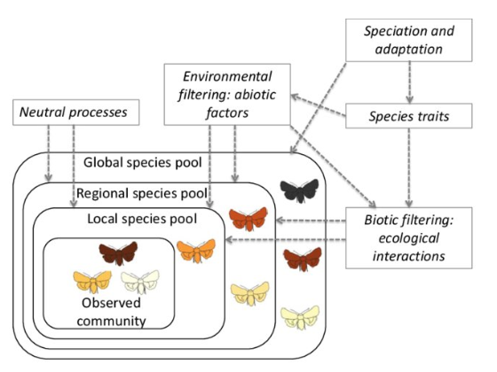

Semana 5 — Teoria Ecológica Aplicada à Restauração II
Traços funcionais, coexistência e facilitação aplicada à Restauração Ecológica
Slides da Aula
1 Introdução
A aplicação de traços funcionais, modelos de coexistência e interações de facilitação marca a transição do paradigma clássico da restauração ecológica (focado na recomposição taxonômica estática) para o paradigma contemporâneo. Este novo paradigma foca na reconstrução de processos ecológicos, funções do ecossistema e interações bióticas complexas.
2 Traços Funcionais e Regras de Montagem (Assembly Rules)
Os traços funcionais correspondem a atributos morfológicos, fisiológicos ou fenológicos dos organismos que afetam diretamente seu desempenho e sobrevivência em resposta às condições ambientais.

2.1 O Modelo de Filtros de Espécies
De acordo com o modelo de regras de montagem (assembly rules), as comunidades locais não são formadas ao acaso, mas resultam da passagem do pool regional de espécies por filtros ambientais e bióticos sucessivos:
- Pool Regional de Espécies: O conjunto total de táxons disponíveis na paisagem biogeográfica.
- Filtros Abióticos: Estresses físicos do ambiente degradado (como secas, extremos de temperatura, solos ácidos ou compactados) que eliminam espécies sem adaptações adequadas.
- Filtros Bióticos: Interações locais como competição, herbivoria e contaminação por espécies exóticas invasoras.
- Comunidade Local: O subconjunto de espécies cujos traços funcionais transpuseram os filtros locais.

2.2 Convergência vs. Divergência de Traços
- Convergência de Traços (Trait Convergence): Ocorre quando filtros abióticos severos selecionam espécies com estratégias funcionais semelhantes para suportar o estresse.
- Divergência de Traços (Trait Divergence): Ocorre quando interações bióticas e competição local favorecem a diferenciação de nichos entre espécies coexistentes.
Na restauração prática, o manejo consiste na manipulação deliberada dos filtros para direcionar a montagem da comunidade desejada.
3 Coexistência e Grupos Funcionais
O entendimento dos mecanismos de coexistência é essencial para estruturar plantios florestais diversos, funcionais e resilientes.
3.1 Diferenciação de Nicho e Redundância Funcional
- Exclusão Competitiva vs. Diferenciação de Nicho: A coexistência de espécies similares é viabilizada pela diferenciação de nicho ecológico, onde a competição intraespecífica supera a interespecífica.
- Redundância Funcional: Presença de múltiplas espécies desempenhando papéis ecológicos semelhantes. A redundância confere resiliência à comunidade contra perturbações e flutuações ambientais.
3.2 Guildas Funcionais na Restauração Tropical
Projetos de restauração florestal em biomas tropicais agrupam espécies em duas guildas funcionais complementares para acelerar a sucessão:
| Grupo Funcional | Atributos Funcionais Típicos | Papel na Restauração Ecológica |
|---|---|---|
| Grupo de Recobrimento (Pioneiras/Iniciais) | Crescimento rápido, copas densas e amplas, alta capacidade sombreadora. | Rápido fechamento do dossel, sombreamento do solo e supressão de gramíneas exóticas invasoras. |
| Grupo de Diversidade (Secundárias/Climácicas) | Crescimento moderado/lento, ciclo de vida longo, tolerância inicial à sombra. | Garantia da sustentabilidade no longo prazo, substituição gradual do dossel inicial e atração de fauna. |
4 Facilitação Aplicada à Restauração
A facilitação é uma interação biótica positiva (+/0 ou +/+) na qual uma espécie modifica o ambiente físico de modo favorável ao estabelecimento e sobrevivência de outras espécies vizinhas.
4.1 Mecanismos Principais de Facilitação
- Plantas Enfermeiras (Nurse Plants): Arbustos ou árvores pioneiras que atenuam condições estressantes no microclima local, reduzindo a radiação e a temperatura do solo.
- Adubação Verde e Fixação de Nitrogênio: Leguminosas (ex.: Inga spp., feijão-guandu) associadas a bactérias fixadoras de \(N_2\) enriquecem o solo com matéria orgânica e nitrogênio, melhorando a nutrição de espécies exigentes.
- Poleiros Naturais e Atração de Dispersores: Árvores ou estruturas funcionais que atraem a fauna frugívora, aumentando a chuva de sementes e o recrutamento de espécies tardias.
- Engenharia de Ecossistemas: Organismos que modificam fisicamente a estrutura do habitat, criando novos microhabitats.
4.2 Hipótese do Gradiente de Estresse (Stress Gradient Hypothesis)
A facilitação predomina em ambientes com severo estresse abiótico, onde o efeito protetor das plantas vizinhas supera a competição por recursos. Conforme o estresse abiótico diminui e o dossel se consolida, as interações locais passam crescentemente a ser dominadas por competição por luz e nutrientes.
5 Síntese para Decisões de Manejo
| Princípio Ecológico | Pergunta de Manejo Prático | Ação de Campo Recomendada |
|---|---|---|
| Traços Funcionais | Quais filtros abióticos estão bloqueando a regeneração natural? | Seleção de espécies com traços funcionais adequados aos estresses locais do solo e clima. |
| Coexistência | Como evitar a exclusão competitiva e aumentar a resiliência? | Plantio consorciado alternando espécies de Recobrimento e Diversidade. |
| Facilitação | Como reduzir custos de manutenção e acelerar o fechamento? | Uso de adubação verde e plantas enfermeiras para controle de gramíneas invasoras. |
6 Bibliografia Sugerida
- GANN, G. D. et al. International principles and standards for the practice of ecological restoration. 2nd ed. Restoration Ecology, 2019.
- KEDDY, P. A.; LAUGHLIN, D. C. A Framework for Community Ecology: Species Pools, Filters and Traits. Cambridge University Press, 2021.
- NAVE, A. G. et al. Manual de Restauração Ecológica: técnicos e produtores rurais no Extremo Sul da Bahia. MPBA / LERF ESALQ-USP, 2016.
- YOUNG, T. P. et al. The ecology of restoration: historical links, emerging issues and unexplored realms. Ecology Letters, 2005.